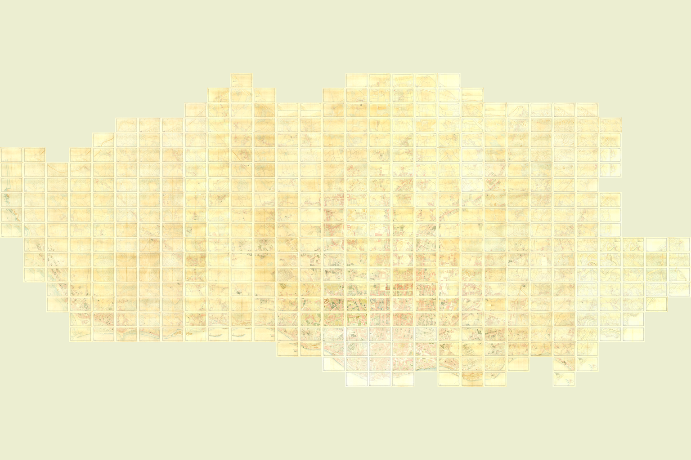

The Planta Topográfica da Cidade do Porto is the first complete scientific and cadastral survey of Porto. Produced at 1:500 under the direction of military topographer Augusto Gerardo Teles Ferreira, it records the municipality at the close of the nineteenth century with a degree of precision that earlier plans of the city did not attempt. Its streets, buildings, property divisions, fields, watercourses and relief made it both a portrait of Porto in 1892 and the working geographical foundation of its subsequent urban government.

By the middle of the nineteenth century, Porto was expanding beyond the densely built historic centre. New roads, railways, water supply, drainage, sanitation and property administration all required a measured account of the terrain. Existing maps—including George Balck’s circular plan of 1813, Frederico Perry Vidal’s plan of 1844 and later revisions—were valuable representations, but they did not combine precise levelling, contour lines and a city-wide parcel survey.
The Porto City Council first asked the national government for an engineer in 1856, to prepare a city plan and levelling survey in support of projected improvements. The request was refused for lack of government funds, although the Council was allowed to requisition technical personnel if it paid their salaries. Engineer Carlos de Pézerat offered his services in 1859, with the recommendation of Filipe Folque, director of the kingdom’s geodetic works, but the Council did not accept. In 1862 the municipality obtained the existing triangulation of Porto from the Geographical Institute. The national decree of 31 December 1864, which called for general improvement plans for the kingdom’s principal towns and cities, made the need for an accurate municipal base map still more urgent.
The Council published a detailed competition programme in the government gazette on 20 September 1869. It required a survey at 1:500, initially covering 3,150 hectares and later enlarged to approximately 3,975 hectares—essentially the territory under municipal administration, rather than only the urban core. Heights were to be measured rigorously and represented by contours at two-metre intervals. Buildings and open land were to be distinguished, as were public, state, corporate and private property; cultivated ground was to be differentiated from land put to other uses.
Five proposals were opened on 21 October 1869, from Bartholomeu Achilles Dejante; J. C. Chelmich; Carlos de Pézerat; João Joaquim de Matos, José Augusto Corrêa de Barros and António Maria Kopke de Carvalho; and Frederico Perry Vidal with Manuel do Couto Guimarães. The contract went to Dejante, whose bid was by far the least expensive. Rival bidders formally warned that the promised accuracy could not be achieved for his price. Dejante died in 1877 having practically not begun the work.
In 1877 the Council abandoned the failed external contract and brought the undertaking under direct municipal administration. Municipal engineer Agnelo José Moreira was placed in charge and requested the assistance of Captain Augusto Gerardo Teles Ferreira, who entered the Council’s service in August 1877.
Teles Ferreira was born in 1830 and died in 1895. An Army officer appointed first-class topographer in 1856, he had assisted the 1861–1862 hydrographic survey of the Douro bar and had already completed, with Emílio Vidigal Salgado, the 1:500 cadastral survey of Viana do Castelo in 1868–1869. That map had also been made as the basis for municipal improvements. When he came to Porto, Teles Ferreira stated that he had twenty-five years of practical experience in this work. By the publication of the reduced Porto map he was described as a retired brigadier general.
Progress became immediate. By May 1878, 52 hectares had been surveyed in the exceptionally difficult parishes of Sé and Vitória; the field total subsequently reported for this early phase was 275 hectares distributed across thirty drawing sheets. Drawing initially lagged behind fieldwork because the Council’s draughtsman could work on the map only after completing his ordinary municipal duties. Work was later organised into a dedicated survey office directed by Teles Ferreira. Its known staff included cavalry captain Fernando da Costa Maia, who served from September 1882 to December 1888, Manuel Pereira da Costa, José Baptista Figueiredo and Moysés Augusto, together with municipal and outside draughtsmen. Detailed progress tables survive for the field and office work undertaken between December 1887 and February 1892.
The complete scheme comprises 464 grid positions, each covering approximately 400 by 250 metres. At 1:500, one centimetre on paper represents five metres on the ground. The map depicts individual building footprints and plots, streets and paths, walls and boundaries, gardens and cultivated land, streams and water features, public works, place names and the form of the terrain. The two-metre contours were the first systematic representation of Porto’s relief at this scale. The combination of planimetric, altimetric and cadastral information allowed the same survey to support street design, infrastructure, property administration and general urban planning.
Two manuscript versions were prepared at 1:500: one in black and white and another coloured in watercolour. Research published by the Municipal Historical Archive in 1992 recorded 453 surviving black-and-white sheets and 446 coloured sheets from the 464-position scheme. The present municipal catalogue describes the digitised coloured sequence through 464 individual records. From the master survey, the office also produced a cadastral reduction at 1:2,500 and a general map at 1:5,000.
Teles Ferreira published an eight-page descriptive memorandum through the City Council in 1890. In a report dated 30 March 1892 he stated that the 1:500 survey was practically complete, although corrections remained so that the entire work could be consistently referred to that year. This distinction explains the map’s date: 1892 is its reference and completion year, not the year in which every sheet was surveyed or the full map was first placed on sale.
On 11 May 1892 the Council opened a further competition to engrave the 1:5,000 reduction. Teles Ferreira supported the proposal submitted by the group represented by Cassiano Augusto Vidal da Maia at the national Directorate-General of Geodetic Works, specialists in engraving on lithographic stone. The original was sent to Lisbon in June 1893. The engraved stones and printed map returned to Porto in June 1895.
The engraving and production of 1,500 copies cost 5,000$000 réis—five contos, or five million réis—approximately €220,000 in 2026 consumer-price terms. This modern figure is necessarily an order-of-magnitude comparison: it converts five contos at the late nineteenth-century parity of 4$500 réis to the pound sterling, applies the United Kingdom’s long-run consumer-price index, and then converts the result to euros. Portugal had suspended gold convertibility in 1891 and no continuous official Portuguese consumer-price series extends back to 1895. At the preceding gold parity, the same nominal amount represented approximately 8.13 kilograms of fine gold, illustrating why different historical value measures can produce much larger equivalents.
Teles Ferreira proposed recovering part of the expenditure by selling copies to public offices and the general public. He expected particular interest in Brazil, where emigrants from northern Portugal might buy a plan of Porto for the memories it preserved. The resulting public edition was a six-sheet lithograph at 1:5,000, published in 1895 and explicitly described in its title as reduced from the 1:500 survey ordered by the Porto City Council, referred to the year 1892, and directed by Teles Ferreira with the assistance of Fernando da Costa Maia and the other employees.
The map was municipal property from its inception; it was not a private work later acquired by Porto. The coloured 1:500 original was formally delivered to the City Council archive on 18 August 1893 and transferred internally to the Porto Municipal Historical Archive in 1984. For decades the survey remained the Council’s only rigorous representation of the urban territory at 1:500 and served as the model for later updates. It continued to underpin municipal planning until a new generation of surveys and plans emerged in the middle of the twentieth century.
In 1992 the municipality marked its centenary with the exhibition and catalogue An Exemplary Cartography: Porto in 1892, a reissue of the six-sheet 1:5,000 map and reproductions of central 1:500 sheets. The Council published a further study, The Plan of the City of Porto in the Nineteenth Century: Cartography and Urbanism, in 2011. The Municipal Archive subsequently digitised the individual sheets and made them available through its archival catalogue. The catalogue does not state an upload date; the complete sequence was publicly reported as newly available online on 20 March 2017. In 2018 the Council launched its georeferenced Historical Interactive Maps of Porto service, initially based on the Teles Ferreira survey.